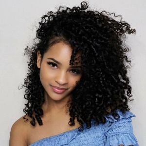

The Importance Of Identifying Different Curl Patterns
Every naturalista should know their hair type to better identify products that will work for them.
Curly hair can be categorized into three types: Type 2, Type 3, and Type 4. Each type also has lettered subcategories that define certain characteristics that each type exhibits.
Type 2: Loose Curls
This type of curl pattern is wavy and lacks volume/texture. It is best to use hair products that are light and will not weigh down your hair any further. Type 2A being the lightest, use products like moose or gel on the ends. For Type 2B, use product starting from the root and make your way down the shaft with a light hand.
For Type 2C, use a generous amount of product but still keeping with a lighter formula to prevent product buildup.
Type 3: Tight Curls

This type of curly pattern has more structure and requires more product. It is best to use hair products with hold, like a leave in conditioner and cream gels.
Leave in, oil, cream, or the LOC Method is highly recommended to get the best definition for your curls. Type 3A, 3B, and 3C all benefit from this method.
Type 4: Coily Curls
Coily curls require the most amount of moisture, care and upkeep in terms of product. Type 4A should maintain hair using wash and go techniques.Type 4B and 4C can both benefit from thicker formulas that contain things such as castor oil or olive oil that will protect the hair and reduce shrinkage. Leave in moisturizer and weekly deep conditioning is key to maintaining curl shape and texture.